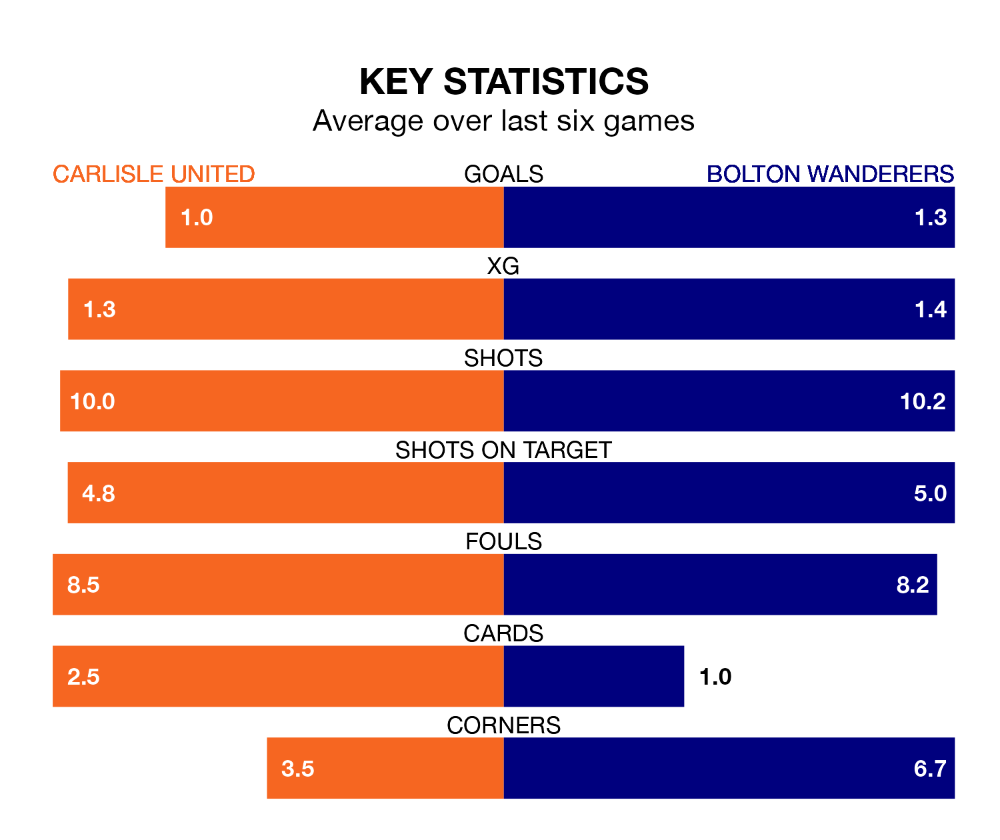

Mid-season relegation candidates Carlisle United face a challenge against high-flying Bolton Wanderers at Brunton Park on Saturday.
Carlisle United are 23rd in the EFL League One table, and have picked up four wins and eight draws in their 28 games to date.
Bolton, meanwhile, are third in the standings with 54 points, having won 17 and drawn three of their first 26 matches, and are two points behind table-toppers Portsmouth.
With 46 goals in 26 games so far this season, Bolton are scoring more than average in the league with 1.8 goals per game. And they are conceding fewer than average, letting in 25 goals at a rate of 1.0 per game.
Carlisle, meanwhile, are below average scorers, with 0.8 goals per game, compared to a league average of 1.3. They have conceded 1.5 goals per game.
With Nathan Baxter between the sticks, Wanderers can rely on one of the league's safest pair of hands. He has kept 12 clean sheets in his 26 appearances this season, and only one other 'keeper – Portsmouth's Will Norris – has been able to prevent the opposition scoring on more occasions in EFL League One.
In United's net, Jokull Andersson has one clean sheet in six games. He has conceded a goal every 80 minutes, 30% more often than the 102 minutes between goals for Baxter.
The home side are in bad form in EFL League One, with one win and a draw from their last six games.
With five wins and one loss over that period, the visitors' form is much better – they have taken 15 points from 18, compared to Carlisle's four.
Carlisle's last match was on January 16, a 2-1 loss against Barnsley, with Luke Armstrong getting the goal for Carlisle.
Bolton beat Cheltenham Town 1-0 last time out, on Tuesday, with Victor Adeboyejo on the scoresheet.
Saturday's match will be refereed by Scott Oldham, who has taken charge of nine EFL League One games so far this season, issuing three red cards and booking 19 players. He has awarded one penalty.
He is yet to oversee a match featuring either Carlisle or Bolton this season.
Updated: 09:07 (UTC), 24/01/24